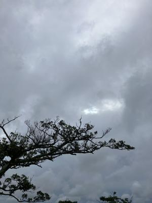
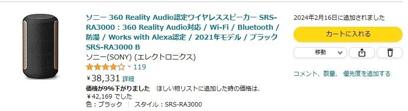
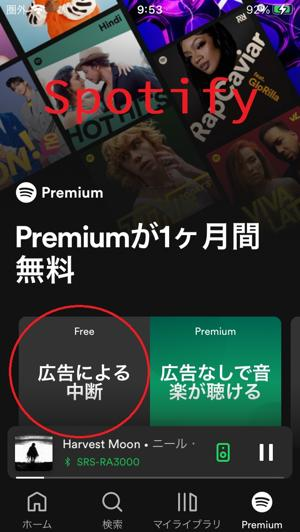

うるがいの話 ある日
最新: ＢＧＭ（背景音楽）【うるがいの話 ある日】とは 一日だけのプログです
『うるがいの話』の最新一日だけのプログで、通信料が少なく経済的だ。カニの画像をクリックすると全ての日付が載る『うるがいの話』サイトを表示します
|
|
【うるがいの話】 うるがい(ｳﾙｶﾞｲ urugai)とは、『もずくがに』の名前でとても大きくなります。 |
|---|---|
|
|
【カミマヤーの話】 猫のことを方言でマヤーといいます。カミマヤー（kamimayaa）とは、神の猫のことです。 |
|
【たながぁの音楽】 たながぁ（ﾀﾅｶﾞｰ tanagaa）とは手長えびのことで、何種類かあり大きいのは車 エビぐらいになります。 |

|
【ぶながぁの話】 ぶながぁ(ﾌﾞﾅｶﾞｰ bunagaa)とは、赤い髪の毛、赤い身体、そして身長は１ｍ２０ｃｍ ぐらい、川の蟹を食べているの目撃された。場所は沖縄県国頭郡大宜味村のと ある村僕の隣近所に住んでいる爺さんから、聞いた話です。 |
|
|
【ギーマの話】 ギーマ(giima)とは、山原の里山に咲くスズランに似た、 花を付けます。実は食べられます、 気が付くと口の周りが紫になっています。 |
2024年05月27日 (月）ＢＧＭ（背景音楽）
17:09

８時間近くは、パソコンと戯れている。ＢＧＭとして、聞き逃しラジオなど
を利用している、ところで２月の研修会館でオギさんが、いい音のするスピ
ーカーで、アマゾンの音楽を流していた。ホー、いいね！と思いお金も入る
事だしと、エディオンから３月末頃に注文した。アマゾンでの保証は一年間
なのでと思い、エディオンしたのだが値段を聞いて、１万円近く高いのには
驚いた。アマゾンが３８，３３１円、エディオンは４９，５００円！。マ、
しかたない、長期保証２０２９年３月２７日であるので。

３月末に物はあるのだが、なぜか使用せず放置していた。この前、気合を入
れてデジタル音楽配信サービスなる無料で利用できるＳｐｏｔｉｆｙのアプ
リを、使用せず放置していたアイオンＳＥにインストールし使ってみた。利
用の開始に何が、好きですか？との質問にビートルズと答えたら、ビートル
ズが流れ、時々同じ系統のポップスが流れる。広告ありの無料だが、１週間
ほどは流れなかったが、今日から変な日本語が聴こえる？と気が付き確認す
ると広告だった。ま、無料だしこの程度はと満足している。

話は変わるが、毎日みているプログのサイトをみると
私の今の生活は、日に２０時間もパソコンを相手にお正月も同じ生活です。
老後の理想など無くて、パソコン１つ有れば、それで本当に心から満足なの
です。
２０時間も・・・、睡眠時間は？。
１７時０３分 ビットコインの総資産 ￥３１、２３７（↓１９５）